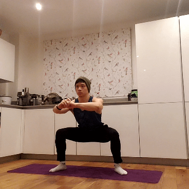

Lower Body: Squat
Muscles Worked: Legs (Quadriceps and Hamstrings), Calves
1 - Chair Squat

Since everyone's stuck at home during lockdown, you're probably a master of sitting down by now. Chair squats provide you with a nice safety net as you transition towards a bodyweight squat.
Tips:
- As you descend, send your butt back as far as possible. No one actually sits like this, but it's important for mimicking a proper squat.
- Keep your core engaged throughout the movement and contract your glutes as you stand up.
2 - Squat to Calf Raise
You can't go wrong with a simple bodyweight squat: just drop your hips and then stand back up. Adding in a calf raise at the top will ensure that your legs are worked all the way through.
Tips:
- Use whatever feet position is comfortable for you - shoulder-width apart with slightly out-turned feet works best for most people.
- The descent should be like sitting into a tiny, imaginary stool.
- When you reach at the bottom, push through your heels to return to the top.
- At the top, press through your toes to perform a calf raise. Both the squat and the calf raise should count as one rep.
3 - Split Squat
If the squat and lunge had a baby, the split squat would be the end result. The front leg will mainly use the quadriceps, while the back leg will mainly use the calf.
Tips:
- Having your back foot go onto tiptoes lets you shift more weight forward.
- Put your hands on your hips or out to the sides for balance.
- Your back knee shouldn't touch the ground! Doing these on soft mat is useful in case you overshoot.
4 - Cossack Squat

These are an adventurous alternative to the split squat for working your legs separately. Instead of forward-backward, you'll have to work on shifting your weight side-to-side.
Tips
- Your feet should be placed considerably wider than shoulder-width.
- At the bottom, one foot should be flat while the other foot should be upturned from the heel.
- Only go as low as you feel comfortable, otherwise you might lose your balance!
5 - Plyometric Tuck Squat

Stand back - these are explosive. To do these, you'll have to jump every time you squat. To complete one rep, you'll also have to tuck your legs midair!
Tips:
- The balls of your feet should be the last to leave the ground and the first to land.
- Keep your core engaged throughout the movement.
- As you jump, tuck your legs until your thighs are parallel with the ground.
- Soften your landings if possible - this will lessen the impact on your joints (and your downstairs neighbours).
Click HERE to return to the home page.